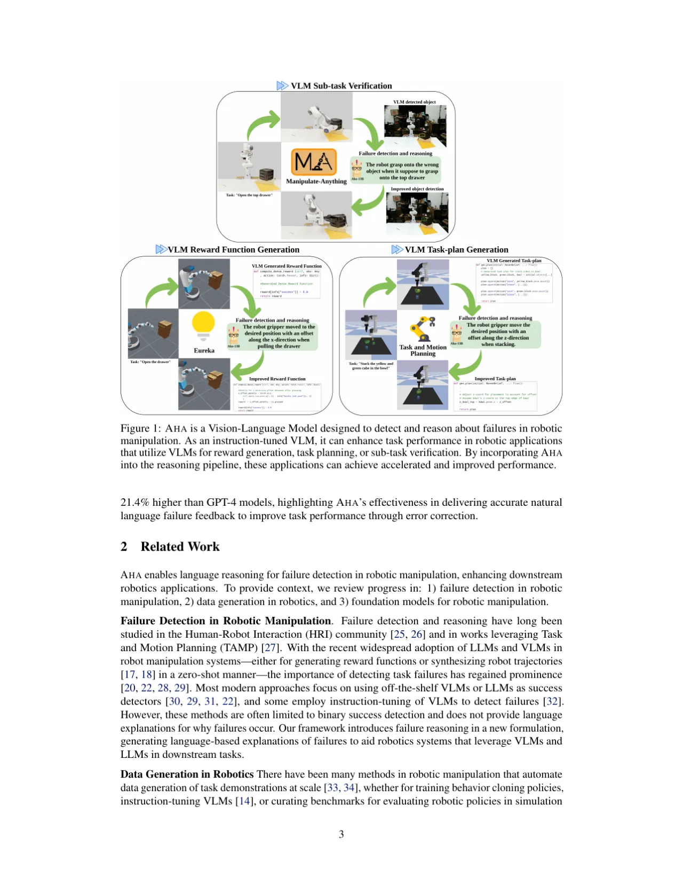
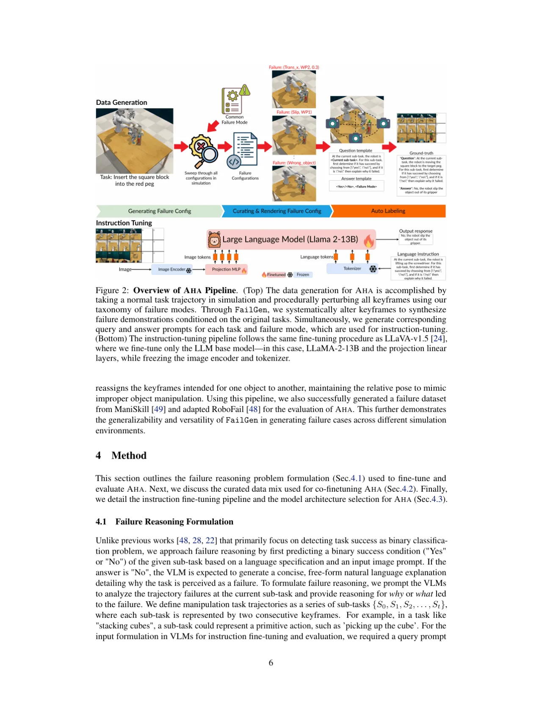
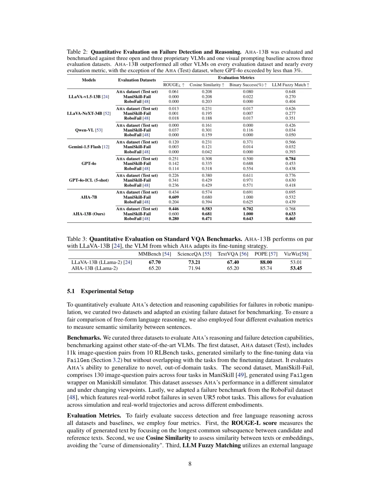
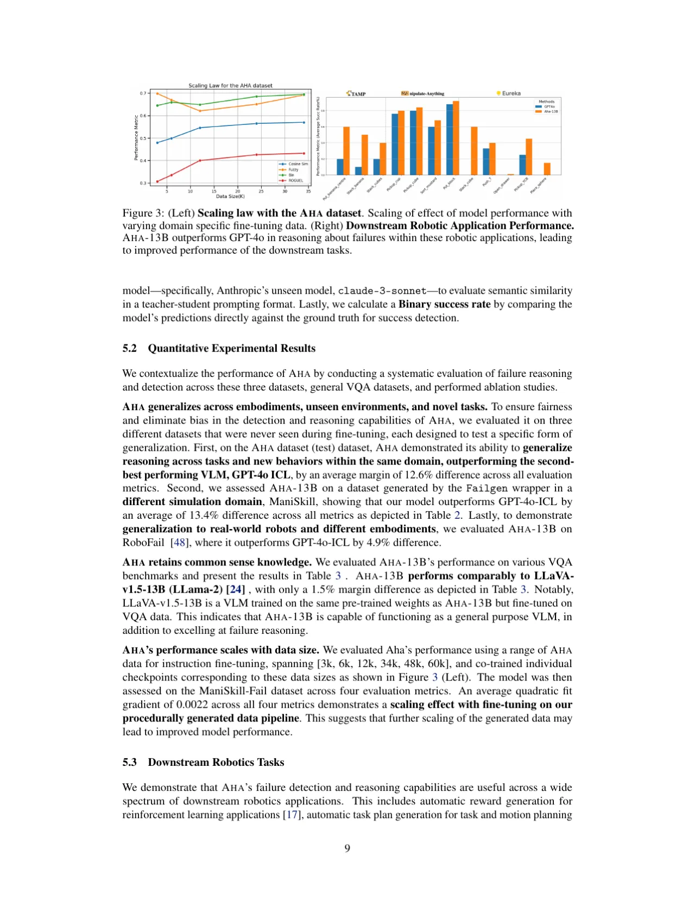

AHA 是一个开源的视觉语言模型（VLM），专为机器人操作失败检测与推理而设计。通过将失败检测重新定义为自由形式推理任务而非二分类，AHA 能够跨越不同机器人、任务和环境生成详细的自然语言解释。在多项评测中，AHA 超越了第二佳模型（GPT-4o in-context learning）10.3%，并将三项下游操作任务的平均成功率提升了 21.4%。
机器人在开放世界环境中执行操作任务时，不仅需要完成任务本身，还需要能够检测并学习自身失败。现有 VLM 和 LLM 虽然提升了机器人的空间推理与问题求解能力，但在失败识别上依然薄弱，限制了其实际应用价值。
"How can we enable these models to autonomously detect and reason about their own failures, particularly in robotics, where interactions and environments are stochastic and unpredictable?"
现有方法将失败检测视为二元分类问题（成功 / 失败），无法解释为何失败。AHA 将其重新定义为自由形式推理任务：先判断子任务是否成功，若失败则生成简洁的自然语言解释，说明失败的原因与发生方式。这使得 AHA 能够跨越不同机器人形态、相机视角、任务和环境进行泛化，并无缝集成到利用 VLM/LLM 的下游机器人应用中。

AHA 的方法包含两个核心组成部分：一是 FailGen——用于程序化生成失败演示数据的可扩展数据生成框架；二是基于 LLaVA 架构的指令微调流程，使 VLM 能够完成失败推理任务。

AHA 将机器人操作轨迹定义为一系列子任务 {S₀, S₁, S₂, …, Sₜ}，每个子任务由两个连续关键帧表示。对于每个子任务，模型接收：（1）描述当前子任务的文本提示；（2）包含多视角关键帧轨迹的结构化图像矩阵 I（行为相机视角 V₀…Vₙ，列为时序关键帧）。模型需要输出：子任务是否成功（"Yes"/"No"），若失败则给出简洁的自然语言解释。这种格式化输入支持跨不同数据集和视角对数据的统一处理。
FailGen 是一个可应用于任意机器人仿真器的环境包装器，通过对关键帧进行扰动将成功轨迹转化为失败轨迹。论文定义了七种失败模式的分类体系：
FailGen 通过遍历 RLBench 中每个任务的所有关键帧，针对七种失败模式穷举所有可能配置，生成 YAML 格式配置文件，并结合语言模板自动标注问答对。最终在 79 个仿真任务中生成了包含 49K 图像-文本对的 AHA 数据集。FailGen 还成功扩展到 ManiSkill 仿真器，证明了其跨仿真环境的通用性。
为保留 VLM 的通用视觉理解能力，AHA 采用数据混合策略：将 AHA 数据集（49K 失败推理对）与 VQA 数据集（665K 对话对）和 LVIS 数据集（100K 目标检测实例）联合用于微调。微调时，仅更新 LLM（LLaMA-2-13B）参数和 2 层投影 MLP，图像编码器与分词器保持冻结。
AHA 在三个评测数据集上与六个 SOTA VLM（含开源和闭源模型）进行了对比，采用四个评估指标；同时在三项下游机器人任务中验证其实用价值。
三个评测数据集均未出现在微调数据中，覆盖不同机器人形态、任务和环境：
四个评估指标：ROUGE-L（文本质量）、Cosine Similarity（语义相似度）、Binary Success（成功检测准确率）、LLM Fuzzy Match（使用 claude-3-sonnet 评估语义匹配）。

| 对比维度 | 基线 | AHA-13B | 提升幅度 |
|---|---|---|---|
| vs. 第二佳模型（GPT-4o ICL） | — | 超越 | 平均 +10.3% |
| vs. 六模型平均 | — | 超越 | 平均 +35.3% |
| vs. LLaVA-v1.5-13B（基础模型） | 0.351 (RoboFail LLM Fuzzy) | 0.465 | +43.0%（平均跨数据集） |
| ManiSkill-Fail Binary Success | GPT-4o ICL: 0.971 | 1.000 | 完美检测率 |
在标准 VQA 基准测试中，AHA-13B 与 LLaVA-v1.5-13B（基础模型）表现相当（如 MMBench 65.20 vs. 67.70，TextVQA 65.20 vs. 67.40，VizWiz 53.45 vs. 53.01），证明微调后 AHA 保留了通用 VLM 能力。

"AHA currently outputs language reasoning that is closely aligned with the failure scenarios in the fine-tuning data."（AHA 目前的语言推理输出与微调数据中的失败场景高度对齐。）这意味着对于超出七种失败模式分类体系之外的开放式失败，AHA 的输出能力受到限制，泛化范围有边界。
"FailGen systematically curates failure data from simulations, distilling large pretrained policies to perform diverse tasks in simulation and sampling failure modes would allow us to generate more open-ended failure examples, potentially enhancing the instruction-tuned performance of AHA."（FailGen 从仿真中系统地整理失败数据，若能从大型预训练策略中蒸馏多样化任务并在仿真中采样失败模式，可生成更具开放性的失败示例，进一步提升 AHA 的微调表现。）目前数据来源仍主要依赖程序化扰动而非策略自然失败。
仅覆盖七类预定义失败模式，真实世界中可能出现的其他失败类型（如传感器噪声、环境光变化、动态遮挡等）尚未被 AHA 数据集系统性涵盖。这是从论文设计中推断出的潜在局限，论文中未单独列举。